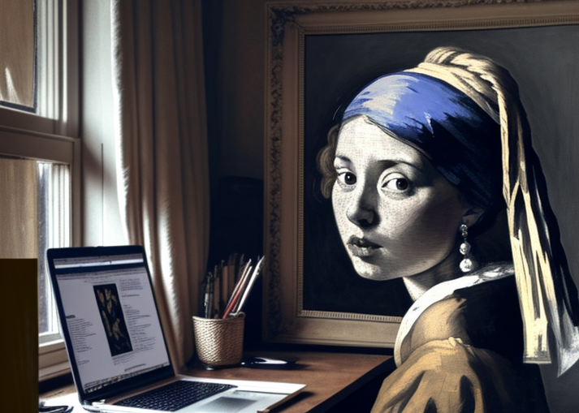

<section id="about" class="bg-gray-100 py-20">
    <div class="container mx-auto px-4">
        <h2 class="text-4xl font-semibold text-gray-800 text-center md:text-left">About Me</h2>
        <p class="text-gray-600 text-center md:text-left mb-8">Exploring the intersections of code and creativity</p>
        <div class="grid grid-cols-1 md:grid-cols-2 gap-12">
            <div class="text-center md:text-left">
                <p class="text-lg mb-6">
                    Born and raised in the vibrant city of Paris, I have been captivated by the world of computer science from an early age. With a relentless passion for technology and its boundless potential, I embarked on a journey of learning and growth.
                </p>
                <p class="text-lg mb-6">
                    My expertise lies in the realm of backend web development, complemented by a solid foundation in frontend fundamentals. Proficient in languages like Python and PHP, I have seamlessly woven my skills into frameworks such as Django and Laravel, crafting seamless digital experiences.
                </p>
                <p class="text-lg mb-6">
                    Beyond the lines of code, I'm an avid reader and researcher, delving into the intricacies of AI and its transformative capabilities. My current focus centers around mastering technologies like ChatGPT and midjourney, perpetually expanding my horizons in this dynamic field.
                </p>
            </div>
            <div class="relative group">
                
                <div class="absolute bottom-0 left-0 w-full bg-black bg-opacity-60 text-white text-center py-2 opacity-0 group-hover:opacity-100 transition-opacity duration-500 ease-in-out">
                    <p class="text-md">"Girl with a Pearl Earring" reimagined using midjourney</p>
                </div>
            </div>
        </div>
    </div>
</section>
